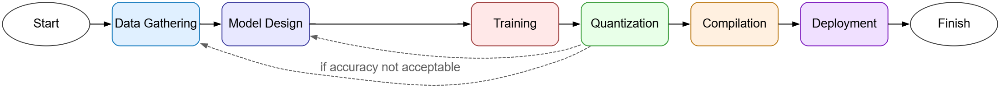

Deploying Machine Learning Models on TI MSPM0 Microcontrollers Using CLI Tools¶
This guide provides a step-by-step overview of how to easily deploy machine learning models on TI’s MSPM0 microcontrollers using TI’s advanced Command Line Interface (CLI) tools. With TI’s neural network compiler (TI-NNC) for microcontrollers, getting your model deployed onto affordable MCUs is a snap.
Table of Contents¶
1. Introduction¶
Machine learning on MSPM0 devices enables intelligent edge computing applications with minimal power consumption. The MSPM0 microcontroller family from Texas Instruments combines ultra-low-power operation with processing capabilities suitable for running inference on machine learning models.
This guide provides a simple workflow for getting your deep learning model up and running on TI’s MSPM0 microcontrollers with minimal modifications. The steps covered include:
Complete grounds-up walkthrough of tool installation and environment setup
Model training with quantization in PyTorch (using industry-standard, PyTorch native QDQ quantization tools)
Trained model export to the industry-standard open neural network exchange (*.onnx) format
Compilation of the trained model to an executable Cortex-M0+ object code library (*.h, *.a) that can run on an MSPM0 microcontroller using TI’s neural network compiler for MCUs
Integration of the executable library containing the trained model into a software project for an MSPM0 microcontroller
1.1 Who This Document is For¶
This document is focused on developers seeking to quantize, compile, and deploy machine learning models to affordable microcontrollers with the goal of being able to run inferences at the edge. It focuses on industry standard and TI provided command line tools, and is intended to be used by developers which are reasonably comfortable working with machine learning models but need guidance on how to leverage TI’s tools to efficiently quantize and compile models for TI MSPM0 MCUs and integrate the models into an embedded software application.
This document does not go into detail on front-end aspects of the machine learning workflow, such as data gathering and model design. If you have your own trained model and wish to deploy it, this document will provide all of the information you need to get started quickly.
1.2 Target Hardware¶
This guide targets deployment of models onto TI’s MSPM0 microcontrollers which are based on the Arm Cortex-M0+ CPU core. Variants are available in this family with 24, 32, and 80MHz CPU performance. In the example discussed in this guide, the MSPM0G5187 microcontroller will be used to execute the inference with the trained model. The MSPM0G5187 microcontroller includes an 80MHz Arm CPU, 128kB of flash memory, 32kB of SRAM memory and TI NPU hardware accelerator, and is available on the easy-to-use LP-MSPM0G5187 TI Launchpad hardware development kit.
1.3 CLI-based Machine Learning Workflow¶
Efficient machine learning deployment is possible through the use of command line interface (CLI) tools, particularly when a machine learning model has been selected or designed already, and sufficient data for training has been gathered and tagged. The six steps required to take a machine learning project from start to finish are shown in the figure below, from data gathering through to compilation and deployment.
 Figure 1: Machine Learning Workflow
This document will focus on TI’s tools for quantization, compilation, and deployment.
Table 1 Workflow Steps and Associated Tools
Workflow Step |
Industry Tools |
TI Provided Tools |
|---|---|---|
Quantization |
PyTorch native quantization |
Quantization aware training (QAT) module |
Compilation |
TI Neural Network Compiler for MCUs, based on Apache TVM TI Arm Clang C/C++ Compiler |
|
Deployment |
TI Code Composer Studio IDE MSPM0-SDK |
Machine Learning Framework¶
Texas Instruments supports the use of PyTorch as the machine learning framework for model definition and training. PyTorch is a widely used machine learning framework with many available models and excellent online documentation. For more information including tutorials, visit https://pytorch.org/. This guide will focus on PyTorch for training and quantization.
Quantization¶
Machine learning models are often developed and trained using floating point data types, typically single precision 32-bit floating point data. While this is ideal during training, it is not ideal for deployment onto constrained microcontrollers which need to perform inference at the edge with the minimum flash and SRAM utilization, the lowest latency, and the lowest possible power consumption. Many machine learning models do not require 32-bit floating point precision to achieve excellent inference accuracy. This guide will demonstrate how to adapt a 32-bit floating point machine learning model for deployment in 8-bit integer format. This reduces memory size to approximately 1/4 the size of the 32-bit floating point model, and also reduces latency and power consumption. PyTorch includes tools for quantizing models from 32-bit floating point down to 8-bit integer arithmetic. In this guide, the QDQ quantization approach will be demonstrated to reduce the memory footprint, latency, and power of the deployed model. The techniques demonstrated here may be easily applied to other models as well.
Example Dataset and Deep Learning Model¶
To demonstrate the process of deploying a deep learning model, this guide leverages the classical deep learning problem of classifying hand written digits using a convolutional neural network, or CNN. This guide will use the MNIST digit recognition data set available directly within the PyTorch Torchvision package for training. The data set consists of 28 x 28 pixel grayscale images of hand written digits. The data set includes 60,000 images intended for use in training, and 10,000 additional images intended for use in testing (independent from training), tagged into 10 classes (representing the numerical digits 0 to 9). This guide will deploy a model derived from the LeNet-5 model, which employs several CNN layers and several fully connected layers, for inference.
2. Environment Setup and Installation¶
Getting started with model deployment from the command line interface (CLI) is easier than you think. This section will explain the process for installing all of the tools required to train a deep learning model and get it up and running on a MSPM0 MCU.
2.1 Required Software Tools¶
The table below lists all of the tools used in this guide. Windows and Linux environments are equally supported. Step by step setup instructions are also provided below. Versions for the tools are defined where relevant, with a disposition of “required” (implies it is mandatory to use the stated version of the tool), “minimum” (implies that this is the minimum required version), or “tested with” which implies that this workflow was evaluated with these versions but it is expected that other versions (especially newer versions) may work without issue as well.
Tool |
Tool Version |
Purpose |
Where to obtain |
|---|---|---|---|
Command line interface |
Windows: PowerShell or Linux: Bash |
Serves as the primary interface to execute tools like Python and TI’s neural network compiler |
Usually installed by default on your desktop or notebook computer |
Python |
3.10 (required) |
Interpreter for running model training |
|
Python PIP |
24.3.1 (tested with) |
Used for installing additional required Python packages |
Included by default in Python 3.10 |
PyTorch |
2.7.1 (tested with) |
Deep learning framework for defining and training models based around tensors |
Installed via Python PIP |
ONNX |
1.18.0 (tested with) |
Export of trained model for transfer from PyTorch to neural network compiler |
Installed via Python PIP |
TI Neural Network Compiler for MCUs |
2.0.0 RC4 (minimum) |
Compilation of ONNX trained model into an executable library |
Installed via Python PIP, supplied by TI |
TI MSPM0-SDK |
2.08.00.xx(minimum) |
Software development kit for TI MSPM0 MCUs |
Available at SDK Link |
TI Code Composer Studio IDE |
20.x.x (tested with) |
Integrated development environment for MSPM0 MCUs |
Available at CCS Link |
TI EdgeAI studio CLI tools (tinyml-tensorlab) |
r1.2 (minimum) |
TI provided CLI tools for developing ML models on TI MCUs |
Available at tinyml-tensorlab github |
2.2 Tool Installation and Configuration¶
Follow the steps below to install the tools and configure your environment. Guidance for Microsoft Windows vs. Linux is provided where applicable.
Install Python 3.10
The first step in environment setup is to install Python- specifically, Python version 3.10.xx. Python installers for version 3.10.11 may be obtained from Python.org for Linux and Windows. Once installed, it’s useful to ensure that the newly installed version 3.10 is also in the environment PATH. If you install Python on Windows with the Python installer GUI, it may present you with the option to place Python into your PATH automatically. If you already have Python 3.10 installed, no action is needed here. To confirm that Python is installed correctly, open a PowerShell terminal (Windows) or a bash shell (Linux) and run the following command.
Windows (PowerShell):
PS> python --version
Python 3.10.11
Linux (Bash):
$ python --version
Python 3.10.11
If Python 3.10 is installed and available on your PATH, you should see the above output. In the Windows case, it’s assumed that the only installed Python version on the PATH is version 3.10. If this is not the case, you need to place version 3.10 into your PATH. In the Linux case, version 3.10 is explicitly specified as it is possible that the underlying Linux distribution has a symlink from python to the OS-specific default Python version.
Configure Python Virtual Environment (venv)
PyTorch work is best done inside of a virtual environment in a container for a particular Python version and set of corresponding Python packages. First, create a directory to use for storing your virtual environment and machine learning models, and change into it. Then, create a venv for use and activate it as shown (in this example, the venv name ti-ml-venv will be used).
Windows (PowerShell):
PS > mkdir ti-ml-sandbox
PS > cd ti-ml-sandbox
PS > python -m venv ti-ml-venv
PS > .\ti-ml-venv\Scripts\Activate.ps1
(ti-ml-venv) PS >
Linux (Bash):
$ mkdir ti-ml-sandbox
$ cd ti-ml-sandbox
$ python3.10 -m venv ti-ml-venv
$ source ti-ml-venv/bin/activate
(ti-ml-venv) $
Install PyTorch and ONNX
From within the virtual environment (ti-ml-venv), execute a Python PIP installation command to install PyTorch and Torchvision packages. PyTorch is the ML framework, and Torchvision provides the MNIST data set that will be trained on in this guide. The Python ONNX package is used for managing exportation of trained models for subsequent compilation.
Windows (PowerShell):
(ti-ml-venv) PS > pip3 install torch torchvision onnx
Linux (Bash):
(ti-ml-venv) $ pip3 install torch torchvision onnx
For more information on installing PyTorch for your hardware, review the detailed information at pytorch.org.
Install the TI Neural Network Compiler (NNC) for MCUs
TI provides an advanced neural network compiler (NNC) for MCUs, available as a Python wheel package for easy installation into the Python virtual environment. Install the TI NNC using the steps shown below. Note that it is important to remain within the Python virtual environment (venv) when executing this step.
Windows (PowerShell)/ Linux:
(ti-ml-venv) PS > pip3 install --extra-index-url https://software-dl.ti.com/mctools/esd/tvm/mcu ti_mcu_nnc
Install the TI MSPM0-SDK
Obtain the MSPM0-SDK from TI.com (for Linux or Windows) and run the respective installer, following the instructions provided: MSPM0-SDK Alternately, the MSPM0-SDK is also available as a Git repository hosted on GitHub and may be cloned to your machine as shown below:
Linux (Bash):
$ cd ~/
$ mkdir ti
$ cd ti
$ git clone https://github.com/TexasInstruments/mspm0-sdk.git
Install TI Code Composer Studio IDE
Obtain Code Composer Studio from TI.com (for Linux or Windows) and run the respective installer, following the instructions provided: TI CCS Code Composer Studio includes both the integrated development environment (editor, debugger) but also the TI Arm Clang C/C++ compiler, which will be used for model compilation together with the TI Neural Network Compiler for MCUs installed in Step 4.
When you are done working in the Python virtual environment (ti-ml-venv) created in Step 2, you can exit the venv and return back to the shell by simply running the command “deactivate” from within the venv.
3. Train Your Own Model(Simple Native Pytorch Quantization)¶
With an installed and configured environment, it’s possible to begin the training process. In this section, an overview of the LeNet-5 model will be provided. First, the model will be presented without quantization. Then, quantization to 8-bit integer data size will be added. The process of modifying the model definition for quantization will be shown and can be applied to other models.
LeNet-5 Model (Float32)
The customized LeNet-5 model that will be used as a reference for quantization is given below. In this stage, quantization is not yet applied to the model and the model is configured for Float32.
import torch
from torch import nn
class TILeNet5_Model(nn.Module):
def __init__(self):
super().__init__()
self.bn0 = nn.BatchNorm2d(1)
self.conv1 = nn.Conv2d(1, 32, 3, 1)
self.bn1 = nn.BatchNorm2d(32)
self.relu1 = nn.ReLU()
self.conv2 = nn.Conv2d(32, 64, 3, 1)
self.bn2 = nn.BatchNorm2d(64)
self.relu2 = nn.ReLU()
self.pool1 = nn.MaxPool2d(2)
self.dropout1 = nn.Dropout(0.25)
self.dropout2 = nn.Dropout(0.5)
self.fc1 = nn.Linear(9216, 128)
self.relu3 = nn.ReLU()
self.fc2 = nn.Linear(128, 10)
def forward(self, x):
x = self.bn0(x)
x = self.conv1(x)
x = self.bn1(x)
x = self.relu1(x)
x = self.conv2(x)
x = self.bn2(x)
x = self.relu2(x)
x = self.pool1(x)
x = self.dropout1(x)
x = torch.flatten(x, 1)
x = self.fc1(x)
x = self.relu3(x)
x = self.dropout2(x)
x = self.fc2(x)
return x
3.1 Model Configuration with PyTorch Quantization¶
PyTorch natively supports QDQ quantization to 8-bit integer data size. The process of modifying the model definition for quantization is given in this section, and can be applied to other models.
Applying PyTorch Native Quantization
In a PyTorch model, the process for enabling quantization on a model is straightforward. Within the model class itself, 4 additional lines must be added: instantiation of quantization stubs in the constructor, and application of the quantization stubs within the forward() function of the model. The PyTorch quantization module must also be brought in from torch.ao.
Instantiating Stubs in the Model Constructor
from torch.ao import quantization
def __init__(self):
super().__init__()
self.quant = quantization.QuantStub()
# ... Rest of model definition
self.dequant = quantization.DeQuantStub()
Calling Quantization Functions in the Model Forward() Pass
from torch.ao import quantization
def forward(self, x):
x = self.quant(x)
# ... Rest of model forward pass
x = self.dequant(x)
LeNet-5 Model: QDQ Quantization to Int8
Below is the complete model with PyTorch native QDQ quantization inserted.
import torch
from torch import nn
from torch.ao import quantization
class TILeNet5_Model_QDQ(nn.Module):
def __init__(self):
super().__init__()
self.quant = quantization.QuantStub()
self.bn0 = nn.BatchNorm2d(1)
self.conv1 = nn.Conv2d(1, 32, 3, 1)
self.bn1 = nn.BatchNorm2d(32)
self.relu1 = nn.ReLU()
self.conv2 = nn.Conv2d(32, 64, 3, 1)
self.bn2 = nn.BatchNorm2d(64)
self.relu2 = nn.ReLU()
self.pool1 = nn.MaxPool2d(2)
self.dropout1 = nn.Dropout(0.25)
self.dropout2 = nn.Dropout(0.5)
self.fc1 = nn.Linear(9216, 128)
self.relu3 = nn.ReLU()
self.fc2 = nn.Linear(128, 10)
self.dequant = quantization.DeQuantStub()
def forward(self, x):
x = self.quant(x)
x = self.bn0(x)
x = self.conv1(x)
x = self.bn1(x)
x = self.relu1(x)
x = self.conv2(x)
x = self.bn2(x)
x = self.relu2(x)
x = self.pool1(x)
x = self.dropout1(x)
x = torch.flatten(x, 1)
x = self.fc1(x)
x = self.relu3(x)
x = self.dropout2(x)
x = self.fc2(x)
x = self.dequant(x)
return x
These are all of the changes required to the model. Additional changes to the post training export process are required for the ONNX output to correctly inherit the quantization properties.
Modifying the Model Export Process to be Quantization Aware
In order to properly export a quantized model to ONNX format for subsequent compilation, it is necessary to modify the export process to be quantization aware. The additions include obtaining the quantization configuration (qconfig), preparing the model for quantization, and obtaining the Int8 quantized model.
modelInst = TILeNet5_Model_QDQ() # Instantiate model
# Perform your training / testing loop here!
modelInst.eval() # Move model to evaluation mode after training/testing
inData = torch.randn(1, 1, 28, 28, dtype=torch.float32)
modelInst.qconfig = quantization.get_default_qconfig('x86')
modelPrepared = quantization.prepare(modelInst)
modelPrepared(inData)
modelInt8 = quantization.prepare(modelPrepared)
modelInt8(inData)
# Export the Int8 quantized model to ONNX format
torch.onnx.export(modelInt8, inData, "trained_model.onnx", input_names=["input"])
The last step of the export sequence above is the call to the PyTorch ONNX export utility, which saves the trained model into *.onnx format, needed for the TI Neural Network Compiler to accept the trained model as input.
Additional Documentation
For more information on quantization within PyTorch, please refer to the detailed documentation available from the PyTorch project.
3.2 Compiling Trained Models with TI’s Neural Network Compiler for MCUs¶
Once the training process has generated a *.onnx output file, the next step in deployment is to compile the model to an object code library and API header for inclusion into an MCU software application. For this step, the TI Neural Network Compiler for MCUs must be installed in the Python virtual environment, and the trained model ONNX file must be available.
Calling the TI Neural Network Compiler for MCUs
TI’s Neural Network Compiler may be called from the command line inside the Python virtual environment. Several critical command line flags must be set for proper compilation: Primary compilation command: tmvc compile Typical parameters for compiling to MSPM0 for execution on the Arm Cortex-M0+ CPU include the following:
--target="c, ti-npu type=soft"run layers with an optimized software implementation on a host processor or use--target="c, ti-npu"run layers on an NPU (if exists on the target MCU device).--target-c-mcpu=cortex-m0plus--cross-compiler="<TI Arm Clang Root>/bin/tiarmclang"--cross-compiler-options="-Os -mcpu=cortex-m0plus -march=thumbv6 -mtune=cortex-m0plus -mthumb -mfloat-abi=soft -Wno-return-type"
To understand the various compiler options in greater detail please refer to the Compilation Explained Page of TI NNC User Guide.
Example call to compiler
Below is an example call to the compiler for an input ONNX (replace .onnx with your ONNX filename before executing).
Windows (PowerShell):
PS > tvmc compile --target="c, ti-npu type=soft" --target-c-mcpu=cortex-m0plus .\<MODEL_FILE_NAME>.onnx -o .\artifacts\model.a --cross-compiler="<TI_COMPILER_INSTALL>\bin\tiarmclang.exe" --cross-compiler-options="-Os -mcpu=cortex-m0plus -march=thumbv6m -mtune=cortex-m0plus -mthumb -mfloat-abi=soft -Wno-return-type"
Linux (Bash):
$ tvmc compile --target="c, ti-npu type=soft" --target-c-mcpu=cortex-m0plus ./<MODEL_FILE_NAME>.onnx -o ./artifacts/model.a --cross-compiler="<TI_COMPILER_INSTALL>/bin/tiarmclang" --cross-compiler-options="-Os -mcpu=cortex-m0plus -march=thumbv6m -mtune=cortex-m0plus -mthumb -mfloat-abi=soft -Wno-return-type"
In the above example calls to the neural network compiler (tvmc compile), the path to your local installation of the TI Arm Clang C/C++ compiler must be passed in place of ‘TI_COMPILER_INSTALL’. If you have installed Code Composer Studio to its default location, the compiler is available here:
CCSv20.03, Windows: C:/ti/ccs2020/ccs/tools/compiler/ti-cgt-armllvm_4.0.3.LTS
CCSv20.03, Linux: ~/ti/ccs2020/ccs/tools/compiler/ti-cgt-armllvm_4.0.3.LTS
Outputs
Once the TI Neural Network Compiler runs to completion, two critical files are generated in the artifacts directory where the compilation was executed:
Model API (interface) file: tvmgen_default.h
Model pre-compiled object library file: model.a
These files are the outputs which are taken into the MSPM0 software development project for inclusion in the application software build.
Learning More about TI’s Neural Network Compiler for MCUs
For a complete detailed description of TI’s neural network compiler for MCUs, including additional configuration options and guidelines for use, visit the TI NNC for MCUs User’s Guide.
4. Train Your Own Model(Using EdgeAI Studio CLI: tinyml-tensorlab)¶
The Tiny ML Tensorlab repository is meant to be as a starting point to install and explore TI’s AI offering for MCUs. It helps to install all the required repositories to get started. Currently, it can handle Time series Classification, Regression and Anomaly Detection tasks.
Once you clone this repository, you will find the following repositories present within the tinyml-tensorlab directory:
4.1 tinyml-tensorlab¶
The Tiny ML Tensorlab repository available on GitHub is meant to be as a starting point to install and explore TI’s AI offering for MCUs. It helps to install all the required repositories to get started. Currently, it can handle Image Classification, Time series Classification, Regression and Anomaly Detection tasks.
Once you clone this repository, you will find the following repositories present within the tinyml-tensorlab directory:
tinyml-modelmaker: Based on user configuration (yaml files), stitches a flow with relevant scripts to call from tinyverse. This stitches the scripts into a flow of data loading/training/compilation This is your home repo. Most of your work will be taking place from this directory.
tinyml-tinyverse: Individual scripts to load data, do preprocessing, AI training, compilation(using NNC/TVM)
tinyml-modeloptimization: Model optimization toolkit that is necessary for quantization for 2bit/4bit/8bit weights in QAT(Quantization Aware Training)/PTQ(Post Training Quantization) flows for TI devices with or without NPU. As a customer developing models/flows, it is highly likely that you would not have to edit files in this repo.
Python Environment
Note: Irrespective of being a
Linuxor aWindowsuser, it is ideal to use virtual environments on Python rather than operating without one.For
Linuxwe are usingPyenvas a Python version management system.For
Windowswe show below using pyenv-win and also using Python’s nativevenv
Linux OS
Using Pyenv-Linux (Recommended)
Follow https://github.com/pyenv/pyenv?tab=readme-ov-file#a-getting-pyenv to install pyenv
Use Python 3.10.xx
pyenv local <python_version>is recommended. The version given will be used whenever python is called from within this folder.
Windows OS
Using Pyenv-Win (Recommended)
Follow steps 1-5 from here using any Python3.10.xx: https://github.com/pyenv-win/pyenv-win?tab=readme-ov-file#quick-start
Instead of step 6,
pyenv local <python_version>is recommended. The version given will be used whenever python is called from within this folder.
Using Python venv
Install Python3.10 from https://www.python.org/downloads/
python -m venv py310
.\py310\Scripts\activate
NOTE: MSPM0 Customers:
Please download and install TI Arm Codegen Tools (TI Arm CGT Clang)
Please set the installed path in your terminal:
Linux:
export MSPM0_C2000_CG_ROOT="/path/to/ti-cgt-armllvm_4.0.3.LTS"Windows:
$env:MSPM0_C2000_CG_ROOT="C:\path\to\wherever\present\ti-cgt-armllvm_4.0.3.LTS"
Installation¶
In the following sections we explain how to setup tensorlab.
Linux OS
Steps to set up the repositories
Clone this repository
cd tinyml-tensorlab/tinyml-modelmakerExecute:
./setup_all.shRun the following (to install local repositories, ideal for developers):
bash cd ../tinyml-tinyverse pip install -e . cd tinyml-modeloptimization/torchmodelopt pip install -e . cd ../tinyml-modelmakerNow you’re ready to go!
bash run_tinyml_modelmaker.sh examples/dc_arc_fault/config_dsk.yaml
Windows OS
This repository can be used from native Windows terminal directly.
Although we use Pyenv for Python version management on Linux, the same offering for Windows isn’t so stable. So even the native venv is good enough.
It is highly recommended to use PowerShell instead of cmd.exe/Command Terminal
If you prefer to use Windows Subsystem for Linux, then a user guide to use this toolchain Windows Subsystem for Linux has been provided.
Step 1.1: Clone this repository from GitHub
Step 1.2: Let us ready up the dependencies
cd tinyml-tensorlab python -m ensurepip --upgrade python -m pip install --no-input --upgrade pip setuptools wheel
Step 1.3: Install Tiny ML Modelmaker
git config "--global" core.longpaths true cd .\tinyml-modelmaker python -m pip install --editable . # --use-pep517
Tiny ML Modelmaker, by default installs Tiny ML Tinyverse and Tiny ML ModelOptimization repositories as a python package. If you intend to use this repository as is, then it is enough.
However, if you intend to create models and play with the quantization varieties, then it is better to separately clone
Step 1.4: Installing tinyverse
cd ..\tinyml-tinyverse python -m pip install --editable .
Step 1.5: Installing model optimization toolkit
cd ..\tinyml-modeloptimization\torchmodelopt python -m pip install --editable .
We can run it now!
cd ..\..\tinyml-modelmaker python .\tinyml_modelmaker\run_tinyml_modelmaker.py .\examples\dc_arc_fault\config_dsk.yaml
Keeping up to date¶
Since these repositories are undergoing a massive feature addition stage, it is recommended to keep your codes up to date by running the following command:
git_pull_all.sh
4.2 Example Run¶
To illustrate the tinyml-tensorlab workflow, let’s walk through an example using the MNIST Image Classification task. The configuration file for this example is located at:
tinyml-modelmaker/examples/MNIST_image_classification/config_image_classification_mnist.yaml
This YAML file defines all stages of the pipeline — from dataset setup and feature extraction to model training and compilation. The key sections are described below:
Section 1: Common¶
These options are about the overall run
common:
target_module: 'vision' # timeseries and vision modules are currently supported, more modules to come soon.
task_type: 'image_classification' # vision->image_classification| timeseries->arc_fault/motor_fault
target_device: 'MSPM0G5187' #Target TI Device
run_name: '{date-time}/{model_name}' # Run directory name is based on this, you can provide your own name, recommended to keep as is
Section 2: Dataset¶
dataset: # Enable/disable dataset loading
enable: True # True to enable dataset loading, else will directly start from training step
dataset_name: 'mnist_image_classification' # You can give any name you want, for folder naming purpose
input_data_path: 'https://software-dl.ti.com/C2000/esd/mcu_ai/01_02_00/datasets/mnist_classes.zip' # Can be a url/local folder location to a .zip file or a normal directory
Section 3: Data Processing and Feature Extraction¶
data_processing_feature_extraction:
feature_extraction_name: Mnist_Default #A default preset which sets the below image_height, image_width, image_num_channel, image_mean and image_scale to the values commented below
# image_height: 28 ##Image dimension(Height)
# image_width: 28 ##Image dimension(Width)
# image_num_channel: 1 ##Number of channels( RGB=3, Greyscale=1) present in the image
# image_mean: 0.1307 ##Average pixel intensity of dataset computed per channel
# image_scale: 0.3081 ##Standard deviation of pixel intensities per channel
# variables: 1
Section 4: Training¶
training:
enable: True # Enable/disable training
model_name: 'Lenet5' # refer to tinyml-tinyverse\tinyml_tinyverse\common\models\generic_image_models.py for exact model architecture
batch_size: 64 # Batch size to train
training_epochs: 14 # Number of epochs to run training
quantization: 2 # 0->no quantization(simple fp32 training)| 1->quantized models that can run on CPU| 2->TI NPU Aware quantization
num_gpus: 1 # 0 -> use CPU training. 1 -> Use GPU training (System needs to have GPU)
learning_rate: 0.1
Section 5: Testing¶
testing:
enable: True # Enable/disable testing
Section 6: Compilation¶
compilation: # To enable/disable compilation
enable: True # Enable/disable compilation of onnx model-> device runnable libraries
4.3 Executing the Workflow¶
Once the YAML is configured, execute the command below to start the full training → quantization → compilation pipeline:
./run_tinyml_modelmaker.sh ./examples/MNIST_image_classification/config_image_classification_mnist.yaml
At the end of the run, both the trained model and compiled artifacts (for deployment on MSPM0 devices) will be generated.
5. Bring Your Own Model¶
Model optimization toolkit that is necessary for quantization for 2bit/4bit/8bit weights in QAT(Quantization Aware Training)/PTQ(Post Training Quantization) flows for TI devices with or without NPU. The following package provides wrappers for models running on TI-NPU (HW Accelerator) or CPU. The wrappers for TI-NPU starts from TINPU whereas for CPU starts from GENERIC.
Tiny ML TorchModelOpt - Tools and utilities to help the development of embedded Models in Pytorch - we call these model optimization tools.
This repository helps you to quantize (with Quantization Aware Training - QAT or Post Training Quantization - PTQ) your model to formats that can run optimally on TI’s MCUs
5.1 Installation Instructions¶
If you want to use the repository as it is, i.e a Python package, then you can simply install this as a pip installable package:
pip install git+https://github.com/TexasInstruments/tinyml-tensorlab.git@r1.2#subdirectory=tinyml-modeloptimization/torchmodelopt
To setup the repository for development, this python package and the dependencies can be installed by using the setup file.
cd tinyml-modeloptimization/torchmodelopt
./setup.sh
5.2 Using Quantization Wrappers for your PyTorch model¶
This repository helps you to quantize your model to formats that can run optimally on TI’s MCUs
Note: Please consult the device and SDK documentation to understand whether Hardware based TI NPU acceleration is supported in that device.
1. ARM devices with Hardware based TI NPU acceleration (TINPUTinyMLQATFxModule / TINPUTinyMLPTQFxModule)¶
TINPUTinyMLQATFxModule / TINPUTinyMLPTQFxModule is a PyTorch module that incorporates the constraints of TI NPU Hardware accelerator. We call this a wrapper as it wraps your PyTorch module and induces the constraints of the hardware.
It can be imported as follows. from tinyml_torchmodelopt.quantization import TINPUTinyMLQATFxModule
The following is a sample usage of how to incorporate this module.
from tinyml_torchmodelopt.quantization import TINPUTinyMLQATFxModule, TINPUTinyMLPTQFxModule
# create your model here:
model = ...
# load your pretrained checkpoint/weights here or run your usual floating-point training
pretrained_data = torch.load(pretrained_path)
model.load_state_dict(pretrained_data)
# wrap your model in TINPUTinyMLQATFxModule / TINPUTinyMLPTQFxModule
model = TINPUTinyMLQATFxModule(model, total_epochs=epochs)
# model = TINPUTinyMLPTQFxModule(model, total_epochs=epochs)
# train the wrapped model in your training loop here with loss, backward, optimizer, etc.
# your usual training loop
model.train()
for e in range(epochs):
for images, target in my_dataset_train:
output = model(images)
# loss, backward(), optimizer step, etc comes here as usual in training
model.eval()
# convert the model to operate with integer operations (instead of QDQ FakeQuantize operations)
model = model.convert()
# create a dummy input - this is required for onnx export - will change depending on your model.
dummy_input = torch.rand((1,1,256,1))
# export the quantized model to onnx format
model.export(dummy_input, os.path.join(save_path,'model_int8.onnx'), input_names=['input'])
2. ARM MCUs without using Hardware based TI NPU acceleration (GenericTinyMLQATFxModule / GenericTinyMLPTQFxModule)¶
GenericTinyMLQATFxModule / GenericTinyMLPTQFxModule is a PyTorch module that incorporates the constraints of typical INT8 quantization in PyTorch. This makes use of the PyTorch quantization APIs, but makes it easy to do QAT with minimal code changes. For more details of PyTorch quantization, see its documentation
The wrapper module can be imported as follows. from tinyml_torchmodelopt.quantization import GenericTinyMLQATFxModule
The following is a sample usage of how to incorporate this module.
from tinyml_torchmodelopt.quantization import GenericTinyMLQATFxModule, GenericTinyMLPTQFxModule
# create your model here:
model = ...
# load your pretrained checkpoint/weights here or run your usual floating-point training
pretrained_data = torch.load(pretrained_path)
model.load_state_dict(pretrained_data)
# wrap your model in GenericTinyMLQATFxModule / GenericTinyMLPTQFxModule
model = GenericTinyMLQATFxModule(model, total_epochs=epochs)
# model = GenericTinyMLPTQFxModule(model, total_epochs=epochs)
# train the wrapped model in your training loop here with loss, backward, optimizer, etc.
# your usual training loop
model.train()
for e in range(epochs):
for images, target in my_dataset_train:
output = model(images)
# loss, backward(), optimizer step, etc comes here as usual in training
model.eval()
# convert the model to operate with integer operations (instead of QDQ FakeQuantize operations)
model = model.convert()
# create a dummy input - this is required for onnx export - will change depending on your model.
dummy_input = torch.rand((1,1,256,1))
# export the quantized model to onnx format
model.export(dummy_input, os.path.join(save_path,'model_int8.onnx'), input_names=['input'])
Evaluate your Model before running on device¶
You can now use model for evaluation before compiling and running on device
import onnxruntime as ort
model_name = 'model_int8.onnx'
example_input = torch.rand((1,1,256,1))
ort_session_options = ort.SessionOptions()
ort_session_options.graph_optimization_level = ort.GraphOptimizationLevel.ORT_ENABLE_EXTENDED
ort_session = ort.InferenceSession(model_name, ort_session_options)
prediction = ort_session.run(None, {INPUT_NAME: example_input})
print(prediction)
Wrappers Provided¶
Base Wrapper for Native PyTorch Quantization¶
TinyMLQuantFxBaseModule
Base class for Generic and TINPU wrappers
Model is present in ONNX Format
Quantized according to is_qat option
GENERIC Wrappers for CPU Quantization¶
GenericTinyMLQATFxModule & GenericTinyMLPTQFxModule
Runs on CPU
Model is present in ONNX QDQ Format
Quantized according to QAT/PTQ
TINPU Wrappers for NPU Quantization¶
TINPUTinyMLQATFxModule & TINPUTinyMLPTQFxModule
Runs on NPU
Model is present in ONNX TINPU Format
Quantized according to QAT/PTQ
Options present in TinyMLQuantFxBaseModule¶
ti_model = TinyMLQuantFxBaseModule(model,
qconfig_type=None,
example_inputs=None,
is_qat=True,
backend="qnnpack",
total_epochs=0,
num_batch_norm_update_epochs=None,
num_observer_update_epochs=False,
prepare_qdq=True,
bias_calibration_factor=0.0,
verbose=True,
float_ops=False)
Argument Descriptions¶
Argument |
Type |
Description |
|---|---|---|
model |
torch.nn.Module |
Model |
qconfig_type |
QConfigMapping/QConfig |
QConfig configurations for model quantization |
example_inputs |
torch.Tensor |
Example input with batch size 1 |
is_qat |
bool |
Toggle for PTQ / QAT |
backend |
str |
Backend used to run model |
total_epochs |
int |
Total number of quantized training epochs |
num_batch_norm_update_epochs |
bool/int |
Whether freezing BatchNorm allowed or not, if yes, then provide number of epochs after freezing happens |
num_observer_update_epochs |
bool/int |
Whether freezing observers allowed or not, if yes, then provide number of epochs after freezing happens |
prepare_qdq |
bool |
Extract the pytorch qdq model |
bias_calibration_factor |
float |
Use bias calibration |
verbose |
bool |
Enable or disable verbose statements |
float_ops |
bool |
Enable float bias for Conv and Linear layers, increases accuracy and inference time |
Tips & Notes¶
num_batch_norm_update_epochs
None: Freezes the BatchNorm in middle of epoch
False: Doesn’t freeze the BatchNorm which will overfit the model
int (epoch): Best to set the value between half to three-quarters of total epochs
float_ops
If enabled the addition will have float bias which increases the accuracy
This disables the BNORM to happen on TINPU HW
5.3 Examples for Training and Quantization¶
Detailed examples for using this Quantization wrapper is present at examples. Simple to advanced examples are provided. You can select the example based on what you are looking for, we even provide an example for MNIST Classification that you can refer to.
5.4 Compilation¶
Refer to Section Compiling Trained Models with TI’s Neural Network Compiler for MCU of this user guide for a detailed explanation of the model compilation workflow to generate the artifacts for the ONNX generated in the previous section using the Quantization Wrapper.
6. Bring Your Own Dataset¶
6.1 Dataset format¶
The prepared dataset should have the following structure for it to be consumed by the Modelmaker.
dataset_name/
|
|--classes/
| |-- class1/ # all the files corresponding to the class1 should be in this folder
| |-- class2/ # all the files corresponding to the class2 should be in this folder
| |-- and_so_on/
| |-- classN/ # You can have as many classes as you want
|
|--annotations/
|--file_list.txt # List of all the files in the dataset
|--instances_train_list.txt # List of all the files in the train set (subset of file_list.txt)
|--instances_val_list.txt # List of all the files in the validation set (subset of file_list.txt)
|--instances_test_list.txt # List of all the files in the test set (subset of file_list.txt)
annotations folder is optional. If the folder is not provided, the Modelmaker tool automatically generates one.
classes folder is mandatory.
Look at the example dataset Arc Fault Classification to understand further.
Notes¶
Modelmaker accepts the dataset path through the
input_data_pathargument in theconfig_*.yamlfile.The dataset path can be a URL or a local path.
The dataset path can be a zip file or a directory.
If it is a zip file, it will be extracted and the path to the extracted folder will be used.
The zipped file should contain the
classesdirectory immediately inside it. (Don’t mess with the hierarchy by adding a level e.gdataset_name)If it is a directory, you should give the path until
dataset_name/. Modelmaker searches for theclassesdirectory in this path.In the config file, provide the name of the dataset (dataset_name in this example) in the field
dataset_nameand provide the local path or URL in the fieldinput_data_path.Then the ModelMaker tool can be invoked with the config file. (Refer to Section 4.2 of this user guide to understand the config yaml in greater detail)
6.2 Datafile format¶
There are two accepted formats for how the file can look in the dataset:
Headerless format: There is no header row and no index column in the file.
This is usually suitable for single column files (where only one variable is measured) like the Arc Fault Classification dataset.
2078 2136 2117 2077 2029 1989 2056
Headered format: There is a header row and an index column in the file.
This can be used for single variable of measurement (like current) or multiple variables (e.g x,y,z axes of vibration sensors)
Example for single variable of measurement
Time(sec),I(amp) -0.7969984,7.84 -0.7969952,7.76 -0.796992,7.76 -0.7969888,7.76 -0.7969856,7.76 -0.7969824,7.84 -0.7969792,7.84
Example for multiple variables of measurement
Time,Vibx,Viby,Vibz 19393,-2753,-558,64376 19394,-2551,-468,63910 19395,-424,-427,64032 19396,1429,-763,64132 19397,1236,-974,64065 19398,-903,-547,64242 19399,-1512,-467,63919
As you have seen in the headered format, there are columns named different variations of “time” (
Time(sec),Time)As far as a column has any instance of the text ‘time’ (case insensitive, E.g
Timestamp,TIME,TIME (microsec)), this column is always dropped.So if a column is useful, header should not contain ‘time’ in the file.
To maintain consistency with the MNIST example, refer to this guide for detailed steps on how a TensorLab-compatible dataset was generated from the TorchVision MNIST dataset. MNIST Image Classification Readme.
6.3 Dataset Splitting¶
The dataset can be split into train, validation and test sets.
The default dataset splitting is 60% train, 30% validation and 10% test.
The train set is used for training the model.
The validation set is used for evaluating the model.
The test set is used for testing the model
The
annotationdirectory provides the way dataset needs to be splitIf the user already provides this dataset, then Modelmaker consumes the provided dataset and splits it into train, validation and test sets as it is
If the user does not provide this dataset, then Modelmaker will split the dataset into train, validation and test sets automatically
This split can be done in two ways based on
datasetsection in the config file - split_type:within_filesor split_type:amongst_files–> default
dataset:
# enable/disable dataset loading
enable: True #False
split_type: within_files # amongst_files --> default
split_factor: [0.6, 0.3, 0.1] # This is the default split, for train: val: test
6.3.1 Dataset split “amongst_files”¶
Say you have 10 files (and each file has 100 lines)
This will be split into “6” train files: “3” val files: “1” test file by Modelmaker
each file will still have 100 lines
The
annotationsdirectory and all the files under it will be created automatically
6.3.2 Dataset split “within_files”¶
Say you have 10 files (and each file has 100 lines)
This will be split into the same “10” train files: “10” val files: “10” test file by Modelmaker
However train files will have the first “60” lines, val files will have “30” lines and test files will have the last “10” lines
The
annotationsdirectory and all the files under it will be created automatically
7. Deploying Compiled Models into an MCU Application¶
Once a compiled model is available, the model is ready to be integrated into an MCU application for deployment to the target MCU hardware.
Starting an Embedded Software Project for MSPM0
To get started with deployment of the compiled model, an embedded software project is needed to place the compiled library into. If you already have a software project in development and only want to add the compiled model, then there is no need to import a code example. However, if you do not have a project yet, you can start from an empty project and then add the compiled ML model into the project for testing.
To get started with an empty project, the required tools are the MSPM0-SDK (software development kit) and an IDE with a C/C++ compiler like TI’s Code Composer Studio IDE, which will be used for this workflow.
For instructions on how to get started in Code Composer Studio with an MSPM0 code example, follow the simple instructions in the MSPM0-SDK Quick Start Guides on TI.com. Using these instructions, import an empty example project for the MSPM0 device you are targeting, or for the MSPM0G3507 device (which is the target hardware for this example). The empty example for the LP-MSPM0G3507 may be found here:
Empty example online
Empty example location within the MSPM0-SDK: “SDK_INSTALL_PATH/examples/nortos/LP_MSPM0G3507/driverlib/empty”
Once you have an empty example (or your own software project) building successfully, the project is ready for integration of the compiled model.
Adding the Trained Model
Within Code Composer Studio, create an additional folder in the project structure to hold the compiled model’s files. The specific name of this folder is not critical, this example uses the name artifacts for the folder. Then, copy the model.a and the tvmgen_default.h files from the artifacts folder in the directory where the neural network compilation was performed, and paste them into the model directory which was created in the Code Composer Studio project.
Add the model directory to the include path of the Code Composer Studio project so that the build picks up the path for tvmgen_default.h.
Within the application code where the inference is to be run, include the TVM header for access to the function call needed to run the inference.
Set Up Inputs and Outputs
Create the input map and output map data. The MNIST data set has a 28 x 28 input geometry. There are 10 output classes (digits 0-9). Floating point data types are used for the input and output maps, even though the internal execution of the model can be quantized to Int8.
float input_map[1][1][28][28];
float output_map[1][10];
struct tvmgen_default_inputs tvm_input_map = {(void *)&input_map[0]};
struct tvmgen_default_outputs tvm_output_map = {(void *)&output_map[0]};
Add Call to Run the Inference
Once the input / output data is configured, add the function call for running the inference. After this call, the output_map array will be populated with the results of the inference.
tvmgen_default_run(&tvm_input_map, &tvm_output_map);
Simple Main Routine
A modified main.c from the DriverLib empty example for the LP-MSPM0G3507 with the above elements included is shown below for reference
/* main.c */
#include "ti_msp_dl_config.h"
#include "tvmgen_default.h"
/* Fill this map with the input data before running an inference */
float input_map[1][1][28][28];
/* Read this map after the inference to process the results */
float output_map[1][10];
/* These structures format the input correctly for the ML library */
struct tvmgen_default_inputs tvm_input_map = {(void *)&input_map[0]};
struct tvmgen_default_outputs tvm_output_map = {(void *)&output_map[0]};
int main(void)
{
SYSCFG_DL_init();
while (1)
{
tvmgen_default_run(&tvm_input_map, &tvm_output_map);
NOP();
}
}
NOTE: The above example main.c demonstrates a software-only implementation (executed on the host processor) — applicable when the compiler flag is set to “c, ti-npu type=soft”. If instead you compile with the flag “c, ti-npu”, refer to the NPU Inference Guide for instructions on integrating and executing the generated artifacts for hardware-accelerated inference on the TI NPU.
Application Statistics
Without quantization, a Float32 model would require >200kB of flash memory (beyond the size of the MSPM0G3507 on-chip flash). With PyTorch QDQ quantization, the Int8 model consumes less than half of the available flash memory, while still achieving accuracy within 1 percentage point of the Float32 model.
Quantization |
Flash Size |
Latency |
Accuracy |
|---|---|---|---|
None (Float32) |
236.6kB |
n/a |
99% |
QDQ (Int8) |
50.8kB |
298ms |
98.9% |
8. Summary¶
With the information presented in this document, it’s possible to configure a Python virtual environment for machine learning work, modify a model for Int8 quantization, train the model, compile the model for MSPM0 MCU deployment, and integrate the compiled artifacts into a simple code example for the MSPM0 from the MSPM0-SDK. For more information on Edge AI / machine learning with TI microcontrollers and microprocessors, visit TI EdgeAI Page today.